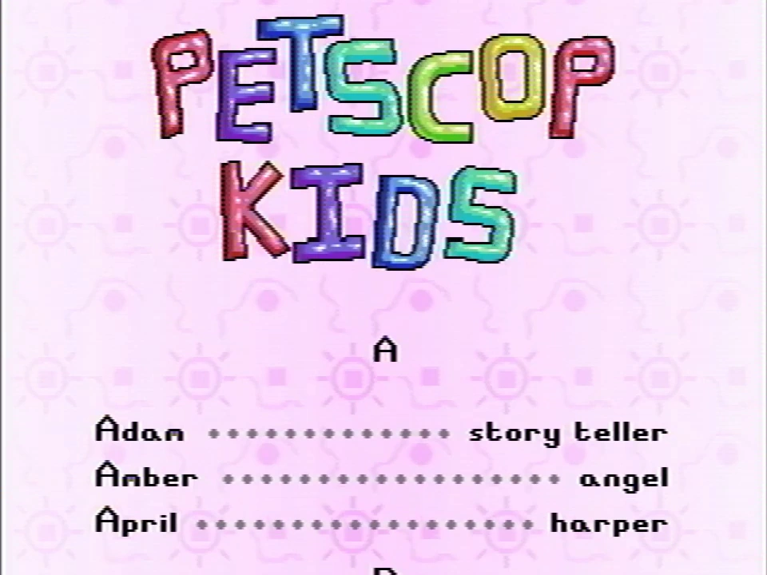
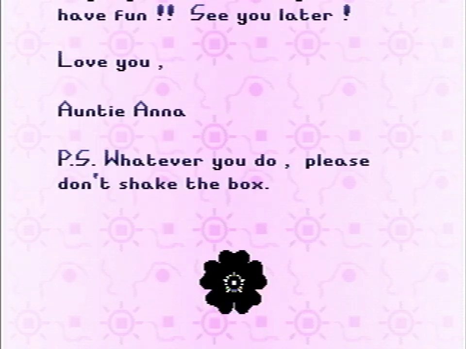

The Book of Baby Names
The Book of Baby Names appears as an option within the pause menu.
In Petscop 6, Paul attempts to access it, however nothing happens when he selects the option. He speculates that a feature where you could name the Pets you collect may have been planned, and that the Book of Baby Names would offer suggestions for names.
In Petscop 24, the Book of Baby Names is selected, and this time it fades to a new screen, in which stylized rainbow text, reading "Petscop Kids", scrolls up from the bottom of the screen. After this, a list of names, alongside various short descriptions, begin scrolling up across the screen in alphabetical order.
The Book of Baby Names also appears on a monitor found in the school's third floor.
The list of names.
| Name | Description |
|---|---|
| Adam | story teller |
| Amber | angel |
| April | harper |
| Belle | smart |
| Benjamin | catcher |
| Carrie | dizzy |
| Charlie | musician |
| Daisy | many |
| David | rich |
| Doug | cook |
| Elly | pale |
| Emily | technician |
| Fatima | sitter |
| Henry | bouncy |
| Holland | lawn mower |
| Jack | dog |
| James | delicate |
| Jessica | worker |
| Joel | athlete |
| Kate | goose |
| Kyle | typist |
| Larry | tool maker |
| Laura | climber |
| Lucas | counselor |
| Mackenzie | speedy |
| Meghan | shy |
| Melinda | baker |
| Mike | painter |
| Nathan | guest |
| Nick | golfer |
| Peter | generous |
| Phil | nosy |
| Ramona | nuisance |
| Rebecca | puppeteer |
| Robbie | reward |
| Ryan | drummer |
| Sally | lister |
| Sarah | listener |
| Sean | lucky |
| Shelby | neighbor |
| Theo | organized |
| Tony | dummy |
| Trevor | hungry |
| Welles | carnivore |
| Will | pilot |

Anna's signature flower at the end of her message
After all of the names have scrolled by, a birthday message written by Anna for Michael Hammond appears:
Thanks for testing!
And now a message from Mrs. Mark, who is working very hard as we speak.
Hi Michael! Consider this your BIRTHDAY card! (sorry I can't put money in it...)
When I heard how many kids were coming to your party I was impressed.
Thank your big brother for letting you and your friends play games all day and making you so popular.
Also thank your other Auntie for making this all possible. If you see her, I mean... not everyone can...
But anyway ....HAPPY 7TH! I'm so so so sorry that I couldn't be here. I hope my gift makes up for it... it's the one in the black box...
(CARRIE helped pick it out, thank her!!)
Opening gifts is so fun ....a lot of little mysteries, and all are solved... so "cathartic"
Anyway, I sure hope you have fun!! See you later!
Love you,
Auntie Anna
P.S. Whatever you do, please don't shake the box.
🏶
{kind=link}
{kind=link}
{kind=link}
{kind=link}